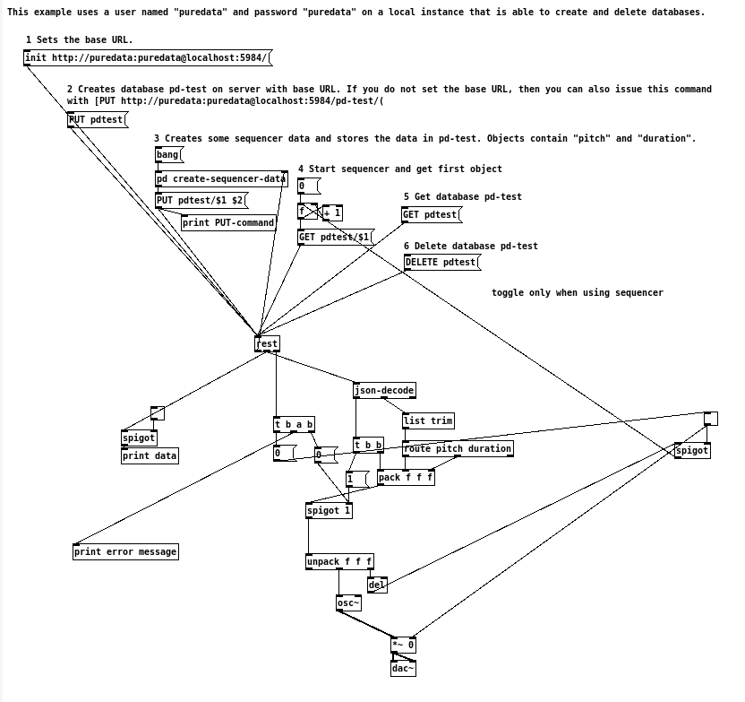

PuREST JSON is a library for connecting Puredata (PD) to HTTP services and encoding and decoding JSON data.
Included with the library are examples. Using these examples, you can see the basic usage of PuREST JSON.
You can use [rest-json] to query webservices. I will explain this querying the history of the Makefile in the repository. You will see the handling of arrays in this example.

As you can see, the webservice from Github returns an object with only one array. This array is then parsed by an instance of [json-decode].
data: list commits [ { "parents": [ { "id": "32656d8170c9660909510100999ae09f749bc9e0" } ]\, "author": { "name": "Thomas Mayer"\, "login": "residuum"\, "email": "thomas@residuum.org" }\, "url": "\\/residuum\\/PuRestJson\\/commit\\/121eee893155d0270d1ce3ad78e5162d0f4cf376"\, "id": "121eee893155d0270d1ce3ad78e5162d0f4cf376"\, "committed_date": "2011-09-21T12:13:36-07:00"\, "authored_date": "2011-09-21T12:13:36-07:00"\, "message": "Used Pd-extended library template"\, "tree": "71022e1263b04d1d5636c5d7c16b6245ce209417"\, "committer": { "name": "Thomas Mayer"\, "login": "residuum"\, "email": "thomas@residuum.org" } }\, { "parents": [ { "id": "ea2b4a170392549c286a784a0a137ad6402758d2" } ]\, "author": { "name": "Thomas Mayer"\, "login": "residuum"\, "email": "thomas@residuum.org" }\, "url": "\\/residuum\\/PuRestJson\\/commit\\/be8d04384403afd836ce5cd8d008ac8075d32b18"\, "id": "be8d04384403afd836ce5cd8d008ac8075d32b18"\, "committed_date": "2011-09-15T15:11:44-07:00"\, "authored_date": "2011-09-15T15:11:44-07:0*
Each array member is then parsed individually by [json-decode], i.e. each member of the object is then output as list on the left outlet, followed by a bang on the right outlet.
array-decode: list parents [ { "id": "32656d8170c9660909510100999ae09f749bc9e0" } ]
array-decode: list author { "name": "Thomas Mayer"\, "login": "residuum"\, "email": "thomas@residuum.org" }
array-decode: list url /residuum/PuRestJson/commit/121eee893155d0270d1ce3ad78e5162d0f4cf376
array-decode: list id 121eee893155d0270d1ce3ad78e5162d0f4cf376
array-decode: list committed_date 2011-09-21T12:13:36-07:00
array-decode: list authored_date 2011-09-21T12:13:36-07:00
array-decode: list message Used Pd-extended library template
array-decode: list tree 71022e1263b04d1d5636c5d7c16b6245ce209417
array-decode: list committer { "name": "Thomas Mayer"\, "login": "residuum"\, "email": "thomas@residuum.org" }
array-done: bang
array-decode: list parents [ { "id": "ea2b4a170392549c286a784a0a137ad6402758d2" } ]
array-decode: list author { "name": "Thomas Mayer"\, "login": "residuum"\, "email": "thomas@residuum.org" }
array-decode: list url /residuum/PuRestJson/commit/be8d04384403afd836ce5cd8d008ac8075d32b18
array-decode: list id be8d04384403afd836ce5cd8d008ac8075d32b18
array-decode: list committed_date 2011-09-15T15:11:44-07:00
array-decode: list authored_date 2011-09-15T15:11:44-07:00
array-decode: list message Removed doxygen.
array-decode: list tree f4b2f6ea08b6dc656c016413d9ca6425da98b974
array-decode: list committer { "name": "Thomas Mayer"\, "login": "residuum"\, "email": "thomas@residuum.org" }
array-done: bang
...
This example will show the usage of diverse HTTP request methods, GET, PUT, and DELETE. You will also see, how you can add data to PUT requests.
Here is the output from the main example in examples/purest-json-test.pd with explanations.
A CouchDB running on the same computer is implied.
First, we create the database and get info about the database:
couchdb return: list ok 1 couchdb return: list db_name test couchdb return: list doc_count 0 couchdb return: list doc_del_count 0 couchdb return: list update_seq 0 couchdb return: list purge_seq 0 couchdb return: list compact_running 0 couchdb return: list disk_size 79 couchdb return: list instance_start_time 1.31733e+15 couchdb return: list disk_format_version 5 couchdb return: list committed_update_seq 0
After that, we build a JSON document and store it in the database:
json-encoded data: symbol \{ "value": "440"\\, "duration": "1000"\\, "start": "10"\\, "name": "first note"\\, "var": [ "yabba"\\, "dabba"\\, "doo" ]\\, "on": "TRUE" \}
decode json data: list value 440
decode json data: list duration 1000
decode json data: list start 10
decode json data: list name first note
decode json data: list var [ "yabba"\\, "dabba"\\, "doo" ]
decode json data: list on 1
couchdb return: list ok 1
couchdb return: list id 1
couchdb return: list rev 1-b7a3cb13c20812a4c7845e9a86f92099
Then we query the database for the stored document and use it to drive a simple ramp:
id: 1 couchdb return: list _id 1 couchdb return: list _rev 1-b7a3cb13c20812a4c7845e9a86f92099 couchdb return: list value 440 couchdb return: list duration 1000 couchdb return: list start 10 name: first note couchdb return: list name first note couchdb return: list var [ "yabba"\\, "dabba"\\, "doo" ] couchdb return: list on 1
In the end we delete the database:
couchdb return: list ok 1